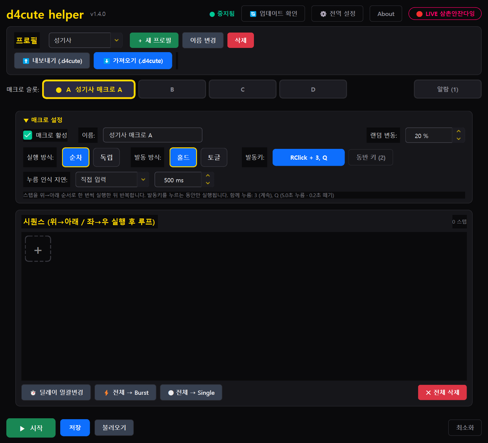
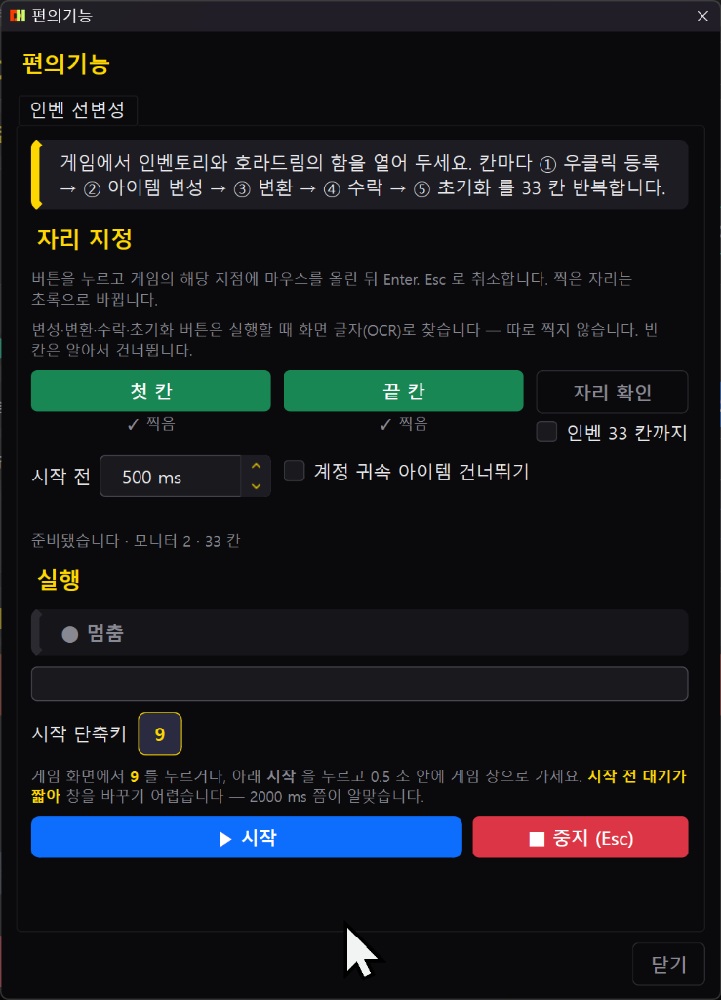
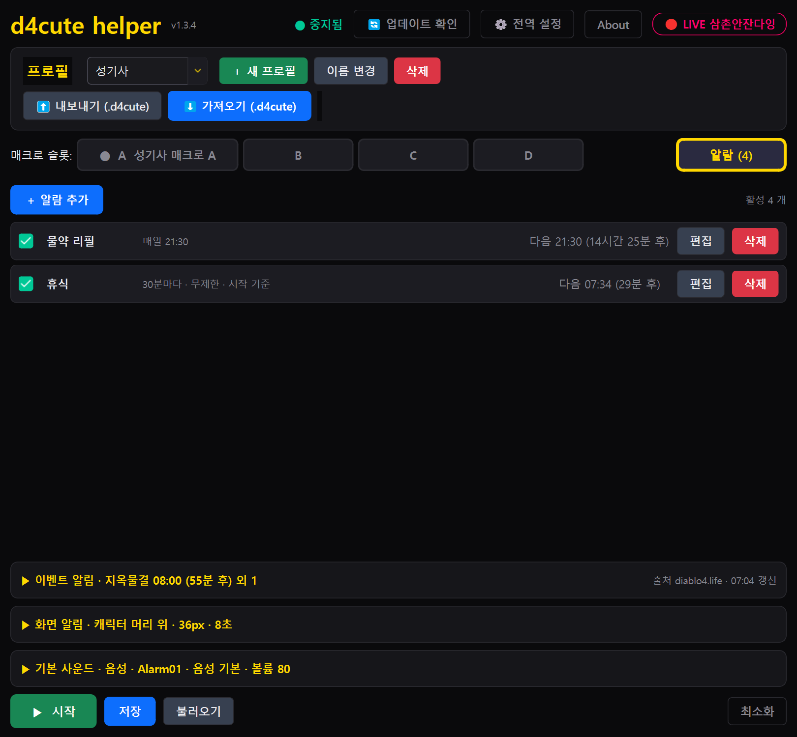

d4cute helper 사용 도움말
헬퍼 1.30 기준 · 2026-10-22 · 이 문서는 계속 갱신됩니다
헬퍼 안 ? 버튼으로 이 문서가 열립니다. 헬퍼는 이 페이지를 보여 줄 뿐 자동으로 아무것도 보내지 않습니다. 더 자세한 설명과 영상은 d4help 저장소와 인벤 가이드에 있습니다.
1. 처음 5분 — 설치부터 첫 매크로까지
- 설치 파일을 받아 실행합니다. Windows 가 "알 수 없는 게시자" 경고를 띄우면 추가 정보 → 실행.
- 헬퍼를 켜면 가장 작은 기본창으로 뜹니다. 프로필 줄에서 직업 프로필을 고르거나 ＋ 로 새로 만듭니다.
- 슬롯 A 를 누르고 매크로 설정 탭에서 발동키를 고릅니다(파란 발동키 버튼을 누르고 키를 누르면 됩니다).
- 시퀀스 탭에서 ＋ 로 스킬 키를 추가하거나 녹화 로 게임에서 누르는 순서를 그대로 기록합니다.
- ▶ 시작 을 누르고 게임으로 가서 발동키를 누릅니다. 오버레이에 슬롯 상태가 뜹니다.
게임 창이 앞에 있을 때만 매크로가 움직입니다. 헬퍼 창을 누르면 게임이 뒤로 가므로, 발동키는 게임을 보면서 누르세요.
2. 화면 구성

- 상단바 — 실행 상태, 업데이트(새 버전이 있으면 깜빡임), 설정, 테스트(입력 테스트), 미니창 토글, 항상 위 핀.
- 프로필 줄 — ‹ › 로 프로필 넘기기, 콤보를 더블클릭하면 이름 변경, ＋ 새 프로필, 🗑 삭제, 텔레그램, 시즌 문서, ? 도움말.
- 슬롯 줄 — A B C D 매크로 슬롯(발동 중이면 빨간색), ♡ 후원, 🔧 편의기능, 알람.
- 탭 줄 오른쪽 칩 — 지금 고른 실행 방식 · 발동 방식 · 발동키가 늘 보입니다(시퀀스 탭에서도).
- 하단 — ▶ 시작 / ■ 중지, 저장, 불러오기, 삼촌안잔다잉 채널, 내보내기, 가져오기, 최소화.
3. 매크로 설정 — 실행 방식 · 발동 방식 · 발동키
| 항목 | 뜻 |
|---|
| 순차 | 스텝을 위→아래로 한 번씩 실행한 뒤 반복합니다. 스킬 로테이션용. |
| 독립 | 스텝마다 자기 대기 시간으로 따로 반복합니다. 순서는 무시됩니다. 버프 유지용. |
| 홀드 | 발동키를 누르는 동안만 실행합니다. |
| 토글 | 한 번 누르면 켜지고 다시 누르면 꺼집니다. |
| 한 번 | 누르면 시퀀스를 처음부터 끝까지 한 바퀴 돌고 스스로 꺼집니다. 제작·구매 같은 일회성 작업용. |
발동키 · 누름 인식 지연
- 발동키는 키보드 키, 마우스 버튼, Ctrl·Shift·Alt 조합 모두 됩니다. 슬롯끼리 같은 발동키를 써도 됩니다(동시에 발동).
- 누름 인식 지연은 짧게 누른 건 무시하고 그 시간 이상 눌러야 발동하게 합니다. 오른쪽 마우스를 발동키로 쓸 때 인벤·창고에서 창이 닫히는 오동작을 막는 핵심 설정입니다.
- 떼고 유지는 발동키를 뗀 뒤에도 그 시간만큼 계속 돌립니다(사냥을 끝내고 바닥 아이템을 줍는 사이).
- 동반 키는 매크로가 켜진 동안 함께 눌러 두는 키입니다(홀드형 버프).
선변성 시작 단축키와 같은 키는 발동키로 고를 수 없습니다 — 게임에서 누르면 둘 다 반응하기 때문입니다.
4. 시퀀스 · 녹화 · 마우스 좌표
- 스텝 카드를 누르면 키·모드(Single 한 번 / Burst 연타 / Hold 꾹)·간격을 바꿉니다. 딜레이 일괄변경, 전체 → Burst/Single 로 한 번에 바꿉니다.
- 녹화 를 누르고 게임에서 누르는 키와 클릭을 그대로 기록합니다. 마우스 클릭은 화면 좌표까지 기록되어 재생 때 그 자리를 누릅니다. 녹화를 끝내려고 헬퍼 창을 누른 클릭은 들어가지 않습니다.
- 클릭 위치 ± px 만큼 매번 조금씩 다른 자리를 누르고, 랜덤 변동 % 만큼 간격이 흔들립니다.
- 키를 꾹 눌러도 한 번만 기록됩니다 — 같은 키 세 번이면 세 번 따로 누르세요.
좌표는 절대 좌표라 해상도·창 위치가 바뀌면 다시 녹화해야 합니다.
5. 편의기능 — 인벤 선변성

- 게임에서 인벤토리와 호라드림의 함을 열어 둡니다.
- 첫 칸·끝 칸 찍기를 누르고 게임의 그 칸에 마우스를 올린 뒤 Enter(Esc 취소). 두 점만 찍으면 33칸을 계산합니다.
- 게임 화면에서 시작 단축키(기본 F11)를 누르거나 ▶ 선변성 시작 을 누르고 게임으로 갑니다. 편의기능 탭을 열어 두지 않아도, 매크로를 켜지 않아도 단축키가 듣습니다.
칸마다 우클릭 → 아이템 변성 → 변환 → 수락(Enter) → 초기화 를 돌립니다. 변성 가능한 칸만 고르고, 초기화 뒤 큐브가 비었는지 확인한 다음 넘어갑니다. 진행 상황은 오버레이에 뜹니다. Esc 는 어디서 눌러도 멈춥니다.
- 계정 귀속 아이템 건너뛰기 — 켜면 귀속 아이템은 건너뜁니다. 꺼 두면 귀속 아이템도 변성하고, 수락 창이 뜰 때만 Enter 를 칩니다.
- 버튼 자리는 화면 글자(OCR)로 찾습니다. 1080p 에서도 되지만, 안 되면
%APPDATA%\d4cute_helper\debug\ 의 alter_slots.txt·alter_miss_*.png 를 그룹에 보내 주세요.
6. 알람 · 배너 · 음성
- 알람 탭에서 이벤트 알림(군단·세계 보스·지옥물결 등)과 개인 알람(시각·타이머)을 켭니다. 켜진 알람이 하나라도 있으면 헬퍼를 켜는 순간부터 울립니다 — 매크로 시작과 무관합니다.
- 화면 배너 위치·크기, 소리 또는 한국어 음성(TTS)을 고를 수 있고, 겹치면 우선순위 순으로 울립니다.

7. 프로필 · 내보내기 · 가져오기
- 프로필 하나에 슬롯 A~D 와 설정이 들어 있습니다. 직업별로 나눠 쓰세요.
- 내보내기 로
.d4cute 파일을 만들고 가져오기 로 불러옵니다. 클랜원과 세팅을 그대로 나눌 수 있습니다. 공유 프로필은 저장소 프로필 폴더에 있습니다.
- 저장 을 눌러야 디스크에 적힙니다. 불러오기 는 디스크의 마지막 저장본으로 되돌립니다.
8. 창 모드 · 항상 위 · 오버레이
- 미니창 — 게임 옆에 두는 한 줄 창. 슬롯 상태·시작/중지·편의기능 아이콘이 있고, 복귀 버튼으로 기본창으로 돌아옵니다.
- 항상 위(핀) — 미니창+핀은 모든 창 위, 기본창+핀은 활성 창이 위로 옵니다.
- 오버레이 — 게임 위에 슬롯 상태·알람·선변성 진행을 띄웁니다. 설정에서 위치·투명도·크기를 바꿉니다. 기본창은 켜면 늘 가장 작은 크기로 뜨고, 창 폭에 따라 버튼이 아이콘으로 접힙니다.
9. 안전 장치 — 대기 키 · 게임 창 감지
- 대기 키(기본 Enter Tab T I O) — 채팅·지도·인벤을 여는 키를 누르면 매크로가 멈추고, 발동키를 다시 누르면 재개합니다.
- 게임 창 감지 — 디아블로4 가 앞에 있을 때만 키를 보냅니다. 설정에서 창 제목·프로세스를 직접 고를 수 있습니다.
- 입력 테스트 — 상단 테스트 로 키 전송이 되는지 게임 밖에서 먼저 확인합니다.
10. 텔레그램 · 로그 보내기
- 프로필 줄의 파란 종이비행기 버튼 → 공지 채널
@d4_notice, 이용자 그룹 @d4cute_helper. QR 을 휴대폰으로 찍으면 바로 열립니다.
- 로그 보기 에서 최근 로그를 복사해 그룹이나 제작자에게 붙여 넣으면 바로 봅니다. 헬퍼는 자동으로 아무것도 보내지 않습니다.
11. 자주 묻는 문제
발동키를 눌러도 아무 일이 없어요
- 상단이 실행 중인지(시작을 눌렀는지), 슬롯의 매크로 활성 스위치가 켜졌는지, 시퀀스에 스텝이 있는지 확인합니다.
- 게임 창이 앞에 있어야 합니다. 대기 키를 눌러 멈춘 상태면 발동키를 한 번 더 누릅니다.
- 그래도 안 되면 중지 → 시작을 한 번 하고, 계속되면 로그를 그룹에 보내 주세요.
오른쪽 마우스가 발동키인데 인벤에서 창이 닫혀요
누름 인식 지연을 길게(300 ms) 로 두세요. 짧은 클릭은 그대로 게임에 가고 길게 누를 때만 매크로가 돕니다.
선변성이 큐브에 아이템을 두 개 올려요 / 버튼을 못 찾아요
1.22 이후엔 초기화 뒤 큐브가 비었는지 확인하고 넘어갑니다. 그래도 생기면 %APPDATA%\d4cute_helper\debug\alter_slots.txt 를 보내 주세요. 1080p 에서 글자가 흐려 못 읽는 경우가 있어 보강했지만 환경에 따라 다릅니다.
창이 하얗게/까맣게 떠요
1.30 에서 내장 브라우저 렌더링 방식을 바꿔 고쳤습니다. 여전히 그렇다면 헬퍼를 껐다 켜고 그룹에 알려 주세요.